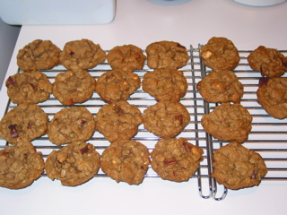

This is based off of a chocolate ship cookie recipe my mom made a great deal of while I was younger. My brothers and I loved these. But it struck my mind that maybe I could use dried apples instead of chocolate chips. (Having a whole bunch of dried apples on my counter, because I had been playing with a food dehydrator, probably had a lot to do with it too.)
| Amount | Measure | Ingredient |
|---|---|---|
| 1/4 | cup | butter |
| 1/4 | cup | shortening |
| 1 | cup | brown sugar |
| 1 | egg | |
| 1/2 | tsp | vanilla |
| 1 | tsp | cinnamon |
| 1 1/4 | cups | oatmeal |
| 1/2 | cup | All purpose flour |
| 1/2 | cup | whole wheat flour |
| 1 | tsp | baking powder |
| 1 | tsp | baking soda |
| 1 | cup | dried apple bits |
Cream butter, shortening, and sugar until smooth. Add egg, vanilla, and cinnamon, mix until fluffy. Add oatmeal and mix again. Add flours and baking powder and soda, stir until just mixed. Stir in apple bits.
Preheat oven to 375 degrees.
Drop onto cookie sheet in walnut-ish sized blobs. Bake for 9 minutes. (I usually have to wait a minute or two after pulling them out of the oven for the cookies to be firm enough to transfer to cooling racks.)